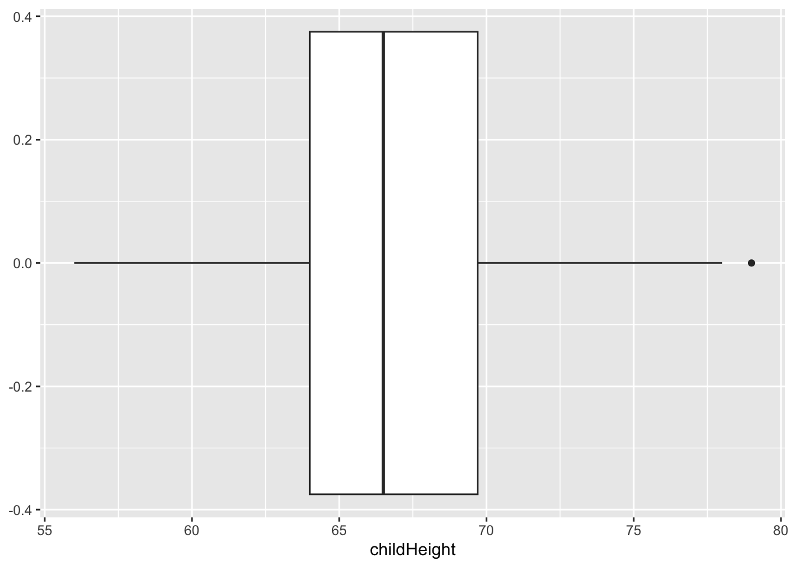
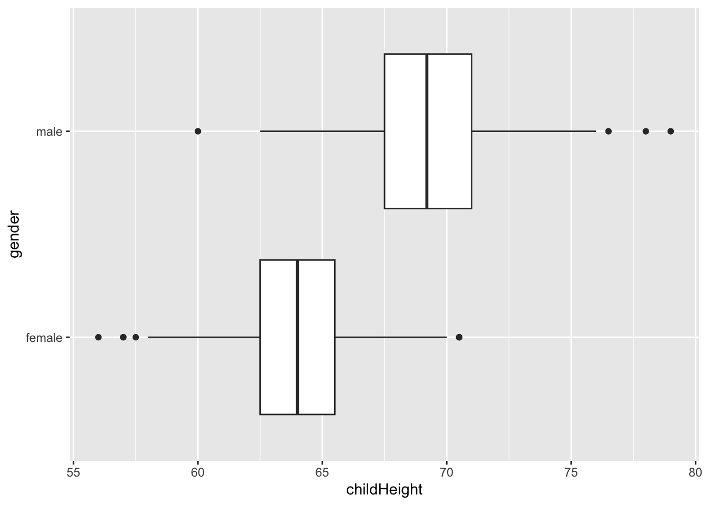
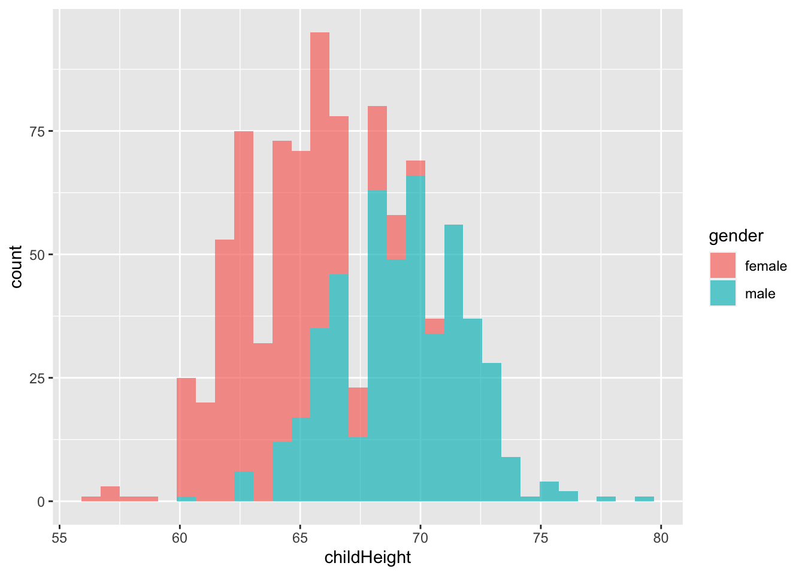
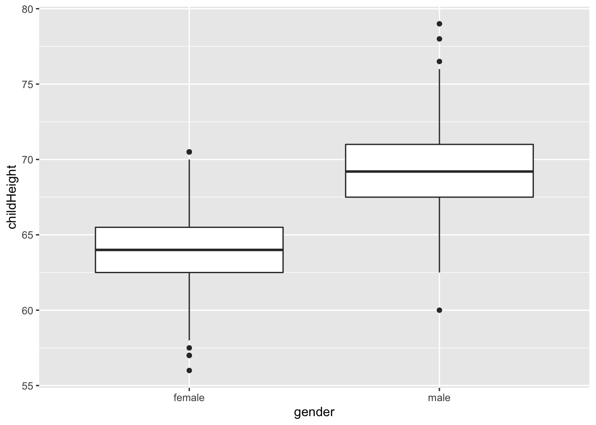
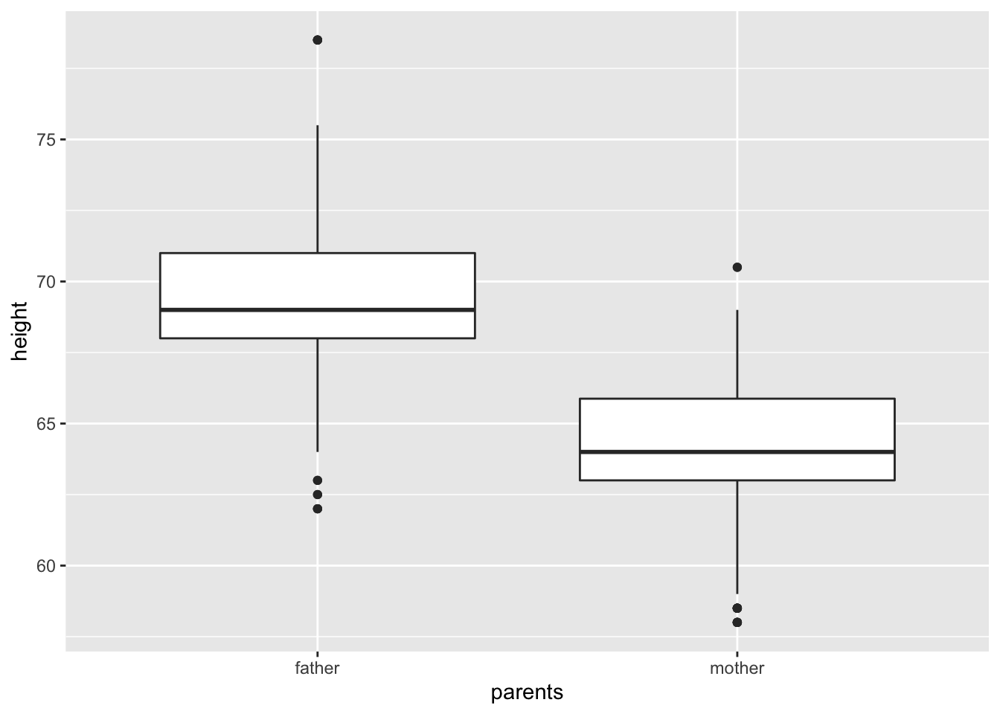
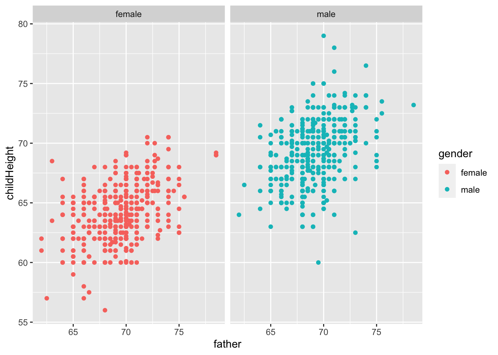
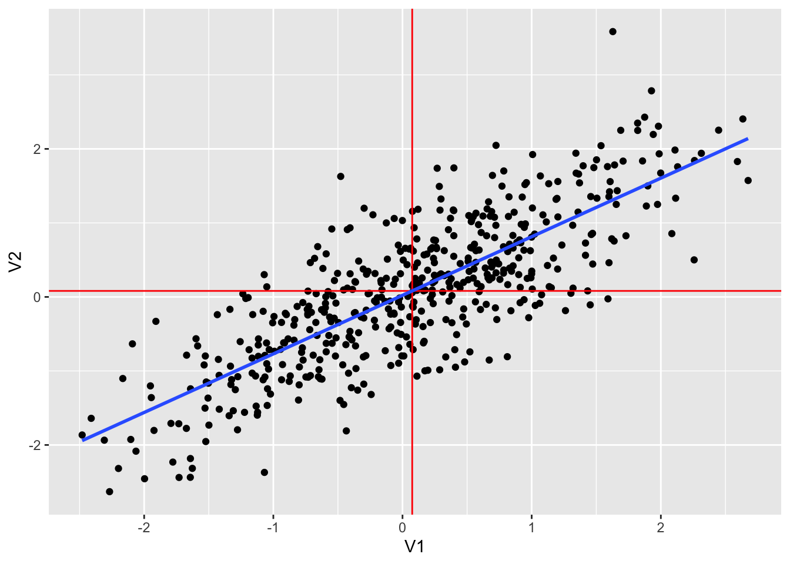
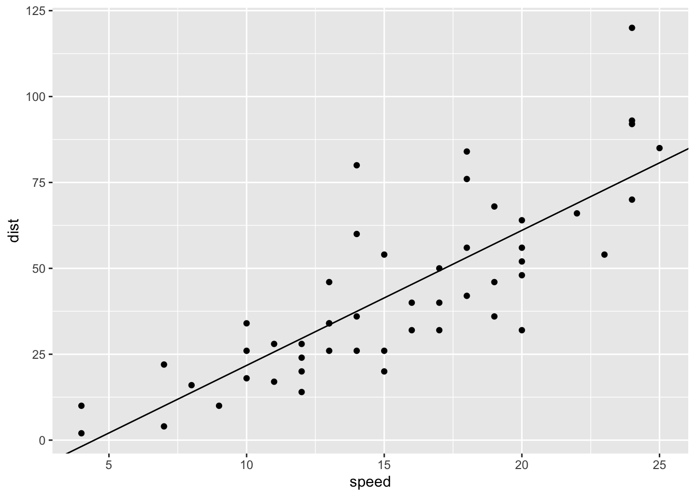

C Appendix C Modeling
- Modeling using
tidyverse

Contents of EDA5
Data Science is empirical!?
empirical: based on, concerned with, or verifiable by observation or experience rather than theory or pure logic
Part I: Data Modeling
Exploration in Visualization
Modeling
- Scientific: Why? Prediction! - Do you support this?
- Evidence based! - What does it mean?
- What is regression, and why regression?
- Linear Regression, ggplot2
- Predictions and Residues
Part II: Examples and Practicum
C.1 Exploration in Visualization
Reference: r4ds:EDA
C.1.1 Exploration in Visualization, I
EDA is an iterative cycle. You:
Generate questions about your data.
Search for answers by visualising, transforming, and modelling your data. - Methods in Data Science
Use what you learn to refine your questions and/or generate new questions.
“There are no routine statistical questions, only questionable statistical routines.” — Sir David Cox (1924.7.15-2022.1.18)
Obituary: Sir David Cox, 1924-2022, Royal Statistical Society
“Far better an approximate answer to the right question, which is often vague, than an exact answer to the wrong question, which can always be made precise.” — John Tukey (1915.6.16-2000.7.26)
Exploratory Data Analysis cannot be done by statistical routines or a list of routine questions.
C.1.2 Exploration in Visualization, II
The very basic questions:
What type of variation occurs within my variables? –one variable
What type of covariation occurs between my variables? - two or more variables
Typical values
- Which values are the most common? Why?
- median, mean, mode, etc.
- Which values are rare? Why? Does that match your expectations?
- outlier, exceptional
- Can you see any unusual patterns? What might explain them?
C.1.3 Exploration in Visualization, III
Clusters and Groups
How are the observations within each cluster similar to each other?
How are the observations in separate clusters different from each other?
How can you explain or describe the clusters?
Why might the appearance of clusters be misleading?
Outliers and Unusual Values
Sometimes outliers are data entry errors; other times outliers suggest important new science.
C.2 Exploration in Visualization, IV
Patterns and models
Could this pattern be due to coincidence (i.e. random chance)?
How can you describe the relationship implied by the pattern?
How strong is the relationship implied by the pattern?
What other variables might affect the relationship?
Does the relationship change if you look at individual subgroups of the data?
C.3 Exploration and Data Modeling
Model is a simple summary of data
Goal: A simple low-dimensional summary of a dataset. Ideally, the model will capture true “signals” (i.e. patterns generated by the phenomenon of interest), and ignore “noise” (i.e. random variation that you’re not interested in).
- “predictive” models: supervised
- “data discovery” models: unsupervised
C.3.1 Hypothesis generation vs. hypothesis confirmation
Each observation can either be used for exploration or confirmation, not both.
You can use an observation as many times as you like for exploration, but you can only use it once for confirmation. As soon as you use an observation twice, you’ve switched from confirmation to exploration.
If you are serious about doing an confirmatory analysis, one approach is to split your data into three pieces before you begin the analysis:
60% of your data goes into a training (or exploration) set. You’re allowed to do anything you like with this data: visualise it and fit tons of models to it.
20% goes into a query set. You can use this data to compare models or visualisations by hand, but you’re not allowed to use it as part of an automated process.
20% is held back for a test set. You can only use this data ONCE, to test your final model.
C.3.2 Model Basics
Reference: R4DS: Model Basics
There are two parts to a model:
First, you define a family of models that express a precise, but generic, pattern that you want to capture. For example, the pattern might be a straight line, or a quadratic curve. You will express the model family as an equation like \(y = a_1 * x + a_2\) or \(y = a_1 * x ^ {a_2}\). Here, \(x\) and \(y\) are known variables from your data, and \(a_1\) and \(a_2\) are parameters that can vary to capture different patterns.
Next, you generate a fitted model by finding the model from the family that is the closest to your data. This takes the generic model family and makes it specific, like \(y = 3 * x + 7\) or \(y = 9 * x ^ 2\).
It’s important to understand that a fitted model is just the closest model from a family of models. That implies that you have the “best” model (according to some criteria); it doesn’t imply that you have a good model and it certainly doesn’t imply that the model is “true”.
All models are wrong, but some are useful. - George E.P. Box (1919-2013)
Now it would be very remarkable if any system existing in the real world could be exactly represented by any simple model. However, cunningly chosen parsimonious models often do provide remarkably useful approximations. For example, the law PV = RT relating pressure P, volume V and temperature T of an “ideal” gas via a constant R is not exactly true for any real gas, but it frequently provides a useful approximation and furthermore its structure is informative since it springs from a physical view of the behavior of gas molecules.
For such a model there is no need to ask the question “Is the model true?”. If “truth” is to be the “whole truth” the answer must be “No”. The only question of interest is “Is the model illuminating and useful?”.
The goal of a model is not to uncover truth, but to discover a simple approximation that is still useful.
C.3.2.1 Regression Analysis (wikipedia)
In statistical modeling, regression analysis is a set of statistical processes for estimating the relationships between a dependent variable (‘outcome variable’) and one or more independent variables (‘predictors’, ‘covariates’, or ‘features’). The most common form of regression analysis is linear regression, in which a researcher finds the line (or a more complex linear combination) that most closely fits the data according to a specific mathematical criterion.
Two purposes of regression analysis: First, regression analysis is widely used for prediction and forecasting. Second, regression analysis can be used to infer causal relationships between the independent and dependent variables. Importantly, regressions by themselves only reveal relationships between a dependent variable and a collection of independent variables in a fixed dataset. To use regressions for prediction or to infer causal relationships, respectively, a researcher must carefully justify why existing relationships have predictive power for a new context or why a relationship between two variables has a causal interpretation.
C.3.2.2 History of Regression Analysis (wikipedia)
The earliest form of regression was the method of least squares, which was published by Legendre in 1805, and by Gauss in 1809. Legendre and Gauss both applied the method to the problem of determining, from astronomical observations, the orbits of bodies about the Sun (mostly comets, but also later the then newly discovered minor planets). Gauss published a further development of the theory of least squares in 1821, including a version of the Gauss–Markov theorem.
The term “regression” was coined by Francis Galton in the nineteenth century to describe a biological phenomenon. The phenomenon was that the heights of descendants of tall ancestors tend to regress down towards a normal average (a phenomenon also known as regression toward the mean). For Galton, regression had only this biological meaning, but his work was later extended by Udny Yule and Karl Pearson to a more general statistical context.
C.3.2.3 Galton’s Example
We use HistData Package. See https://CRAN.R-project.org/package=HistData.
library(tidyverse)
library(modelr)
library(datasets)
library(HistData)Galton’s data on the heights of parents and their children, by child
- Description: This data set lists the individual observations for 934 children in 205 families on which Galton (1886) based his cross-tabulation.
In addition to the question of the relation between heights of parents and their offspring, for which this data is mainly famous, Galton had another purpose which the data in this form allows to address: Does marriage selection indicate a relationship between the heights of husbands and wives, a topic he called assortative mating? Keen p. 297-298 provides a brief discussion of this topic.
- See Help: GaltonFamilies
gf <- as_tibble(GaltonFamilies)
gf## # A tibble: 934 × 8
## family father mother midparentHeight children childNum gender childHeight
## <fct> <dbl> <dbl> <dbl> <int> <int> <fct> <dbl>
## 1 001 78.5 67 75.4 4 1 male 73.2
## 2 001 78.5 67 75.4 4 2 female 69.2
## 3 001 78.5 67 75.4 4 3 female 69
## 4 001 78.5 67 75.4 4 4 female 69
## 5 002 75.5 66.5 73.7 4 1 male 73.5
## 6 002 75.5 66.5 73.7 4 2 male 72.5
## 7 002 75.5 66.5 73.7 4 3 female 65.5
## 8 002 75.5 66.5 73.7 4 4 female 65.5
## 9 003 75 64 72.1 2 1 male 71
## 10 003 75 64 72.1 2 2 female 68
## # … with 924 more rowsgf %>% filter(gender == "male") %>%
ggplot() +
geom_point(aes(father, childHeight)) +
labs(title = "GaltonFamilies", x = "father's height", y = "son's height")
gf %>% filter(gender == "female") %>%
ggplot() +
geom_point(aes(mother, childHeight)) +
labs(title = "GaltonFamilies", x = "mother's height", y = "daughter's height")
“The heights of descendants of tall ancestors tend to regress down towards a normal average (a phenomenon also known as regression toward the mean).”
gf %>% filter(gender == "male") %>%
ggplot(aes(father, childHeight)) +
geom_point() +
geom_smooth(method = "lm", se = FALSE) +
labs(title = "GaltonFamilies", x = "father's height", y = "son's height")## `geom_smooth()` using formula 'y ~ x'
gf %>% filter(gender == "female") %>%
ggplot(aes(mother, childHeight)) +
geom_point() +
geom_smooth(method = "lm", se = FALSE) +
labs(title = "GaltonFamilies", x = "mother's height", y = "daughter's height")## `geom_smooth()` using formula 'y ~ x'
gf %>% filter(gender == "male") %>%
lm(childHeight ~ father, data = .) %>% summary()##
## Call:
## lm(formula = childHeight ~ father, data = .)
##
## Residuals:
## Min 1Q Median 3Q Max
## -9.3959 -1.5122 0.0413 1.6217 9.3808
##
## Coefficients:
## Estimate Std. Error t value Pr(>|t|)
## (Intercept) 38.36258 3.30837 11.596 <2e-16 ***
## father 0.44652 0.04783 9.337 <2e-16 ***
## ---
## Signif. codes: 0 '***' 0.001 '**' 0.01 '*' 0.05 '.' 0.1 ' ' 1
##
## Residual standard error: 2.416 on 479 degrees of freedom
## Multiple R-squared: 0.154, Adjusted R-squared: 0.1522
## F-statistic: 87.17 on 1 and 479 DF, p-value: < 2.2e-16gf %>% filter(gender == "female") %>%
lm(childHeight ~ mother, data = .) %>% summary()##
## Call:
## lm(formula = childHeight ~ mother, data = .)
##
## Residuals:
## Min 1Q Median 3Q Max
## -6.8749 -1.5340 0.0799 1.4434 6.7616
##
## Coefficients:
## Estimate Std. Error t value Pr(>|t|)
## (Intercept) 43.68897 3.00171 14.555 < 2e-16 ***
## mother 0.31824 0.04676 6.805 3.22e-11 ***
## ---
## Signif. codes: 0 '***' 0.001 '**' 0.01 '*' 0.05 '.' 0.1 ' ' 1
##
## Residual standard error: 2.246 on 451 degrees of freedom
## Multiple R-squared: 0.09313, Adjusted R-squared: 0.09111
## F-statistic: 46.31 on 1 and 451 DF, p-value: 3.222e-11- midparentHeight: mid-parent height, calculated as (father + 1.08*mother)/2
gf %>% filter(gender == "male") %>%
lm(childHeight ~ midparentHeight, data = .) %>% summary()##
## Call:
## lm(formula = childHeight ~ midparentHeight, data = .)
##
## Residuals:
## Min 1Q Median 3Q Max
## -9.5431 -1.5160 0.1844 1.5082 9.0860
##
## Coefficients:
## Estimate Std. Error t value Pr(>|t|)
## (Intercept) 19.91346 4.08943 4.869 1.52e-06 ***
## midparentHeight 0.71327 0.05912 12.064 < 2e-16 ***
## ---
## Signif. codes: 0 '***' 0.001 '**' 0.01 '*' 0.05 '.' 0.1 ' ' 1
##
## Residual standard error: 2.3 on 479 degrees of freedom
## Multiple R-squared: 0.2331, Adjusted R-squared: 0.2314
## F-statistic: 145.6 on 1 and 479 DF, p-value: < 2.2e-16C.3.2.4 Summary of the Data
gf %>% summary()## family father mother midparentHeight children
## 185 : 15 Min. :62.0 Min. :58.00 Min. :64.40 Min. : 1.000
## 066 : 11 1st Qu.:68.0 1st Qu.:63.00 1st Qu.:68.14 1st Qu.: 4.000
## 120 : 11 Median :69.0 Median :64.00 Median :69.25 Median : 6.000
## 130 : 11 Mean :69.2 Mean :64.09 Mean :69.21 Mean : 6.171
## 166 : 11 3rd Qu.:71.0 3rd Qu.:65.88 3rd Qu.:70.14 3rd Qu.: 8.000
## 097 : 10 Max. :78.5 Max. :70.50 Max. :75.43 Max. :15.000
## (Other):865
## childNum gender childHeight
## Min. : 1.000 female:453 Min. :56.00
## 1st Qu.: 2.000 male :481 1st Qu.:64.00
## Median : 3.000 Median :66.50
## Mean : 3.586 Mean :66.75
## 3rd Qu.: 5.000 3rd Qu.:69.70
## Max. :15.000 Max. :79.00
## The following information can be found in summary above.
gf %>% summarize(n_father = sum(!is.na(father)),
n_mother = sum(!is.na(mother)),
n_male = sum(gender == "male"),
n_female = sum(gender == "female"))## # A tibble: 1 × 4
## n_father n_mother n_male n_female
## <int> <int> <int> <int>
## 1 934 934 481 453C.3.2.5 What type of variation occurs within my variables?
gf %>% select(childHeight) %>% summary()## childHeight
## Min. :56.00
## 1st Qu.:64.00
## Median :66.50
## Mean :66.75
## 3rd Qu.:69.70
## Max. :79.00gf %>% ggplot() +
geom_boxplot(aes(x = childHeight))
gf %>% ggplot() +
geom_histogram(aes(x = childHeight))## `stat_bin()` using `bins = 30`. Pick better value with `binwidth`.
gf %>% select(gender, childHeight) %>%
group_by(gender) %>%
summarize(q1 = quantile(childHeight, 0.25), med = median(childHeight), q3 = quantile(childHeight, 0.75), left = q1 - 1.5*(q3-q1), right = q3 + 1.5*(q3-q1))## # A tibble: 2 × 6
## gender q1 med q3 left right
## <fct> <dbl> <dbl> <dbl> <dbl> <dbl>
## 1 female 62.5 64 65.5 58 70
## 2 male 67.5 69.2 71 62.2 76.2gf %>% ggplot() +
geom_boxplot(aes(x = childHeight, y = gender))
gf %>% ggplot() +
geom_histogram(aes(x = childHeight, fill = gender), alpha = 0.7)## `stat_bin()` using `bins = 30`. Pick better value with `binwidth`.
gf %>% ggplot() +
geom_histogram(aes(x = childHeight, fill = gender)) +
facet_wrap(vars(gender))## `stat_bin()` using `bins = 30`. Pick better value with `binwidth`.
mm <- gf %>% filter(gender == "male") %>%
summarize(m = sum(!is.na(childHeight)), ave = mean(childHeight), se = sd(childHeight))
mm## # A tibble: 1 × 3
## m ave se
## <int> <dbl> <dbl>
## 1 481 69.2 2.62gf %>% filter(gender == "male") %>%
ggplot(aes(x = childHeight)) +
geom_histogram() +
geom_vline(xintercept = mm$ave, color = "red") +
geom_vline(xintercept = mm$ave - mm$se * 1.96, color = "blue") +
geom_vline(xintercept = mm$ave + mm$se * 1.96, color = "blue")## `stat_bin()` using `bins = 30`. Pick better value with `binwidth`.
gf %>% filter(gender == "male") %>%
filter(childHeight >= mm$ave - mm$se * 1.96) %>%
filter(childHeight <= mm$ave + mm$se * 1.96) %>%
summarize(n = sum(!is.na(childHeight)), ratio = n/mm$m)## # A tibble: 1 × 2
## n ratio
## <int> <dbl>
## 1 458 0.952
gf %>% filter(gender == "male") %>%
ggplot(aes(sample = childHeight)) +
stat_qq() +
stat_qq_line(col = "blue")
gf %>% filter(gender == "female") %>%
ggplot(aes(sample = childHeight)) +
stat_qq() +
stat_qq_line(col = "blue")
gf %>%
ggplot(aes(sample = childHeight)) +
stat_qq() +
stat_qq_line(col = "red")
gf %>% ggplot() +
geom_freqpoly(aes(x = childHeight, color = gender))## `stat_bin()` using `bins = 30`. Pick better value with `binwidth`.
gf %>% ggplot() +
geom_histogram(aes(x = father), fill = "blue", alpha = 0.5) +
geom_histogram(aes(x = mother), fill = "red", alpha = 0.5)## `stat_bin()` using `bins = 30`. Pick better value with `binwidth`.
## `stat_bin()` using `bins = 30`. Pick better value with `binwidth`.
gf %>% ggplot() +
geom_freqpoly(aes(x = father), color = "blue") +
geom_freqpoly(aes(x = mother), color = "red")## `stat_bin()` using `bins = 30`. Pick better value with `binwidth`.
## `stat_bin()` using `bins = 30`. Pick better value with `binwidth`.
gf %>% ggplot() +
geom_boxplot(aes(x = gender, y = childHeight))
gf %>% select(father, mother) %>%
pivot_longer(cols = everything(), names_to = "parents", values_to = "height") %>%
ggplot() +
geom_boxplot(aes(x = parents, y = height))##### R commands on statistical measurements
One Variable
- mean: average, i.e., the sum of values divided by the number of values.
mean()ormean(x, na.rm = TRUE)
- median: middle value, i.e., the value separating the higher half from the lower half of a data sample.
median()ormedian(x, na.rm = TRUE)
- quantile:
quantile()orquantile(x, na.rm = TRUE) - variance: spread from the mean i.e., the expectation of the squared standard deviation of a variable from its mean, or how much a set of numbers are spread out from the mean.
var()orvar(x, na.rm = TRUE)
- standard deviation: a measure of spread from the mean, i.e., a measure that is used to quantify the amount of variation or dispersion of a set of data value. The standard deviation is the square root of the variance.
sd()
More Than One variable
- covariance: a measure indicating the extent to which two random variables change in tandem (either positively or negatively). It’s unit is that of the variable. A large covariance can mean a strong relationship between variables.
cov()
- correlation: a statistical measure that indicates how strongly two variables are related. It’s a scaled version of covariance. It’s value always lies between -1 and +1.
cor(), cor(x, y, use = “everything”)- A resulting value will be NA whenever one of its contributing observations is NA.
- `cor(x, y, use = “pairwise.complete.obs”)
- It uses all complete pairs of observations on those variables.
- summary()
C.3.2.6 What type of covariation occurs between my variables?
gf %>% ggplot() +
geom_point(aes(x = father, y = childHeight, color = gender))
gf %>% ggplot() +
geom_point(aes(x = father, y = childHeight, color = gender)) +
facet_wrap(vars(gender))
gf %>% select(father, mother, gender, childHeight) %>%
group_by(gender) %>%
summarize("cor_w/father" = cor(father, childHeight), "sq_w/father" = cor(father, childHeight)^2, "cor_w/mother" = cor(mother, childHeight), "sq_w/mother" = cor(mother, childHeight)^2)## # A tibble: 2 × 5
## gender `cor_w/father` `sq_w/father` `cor_w/mother` `sq_w/mother`
## <fct> <dbl> <dbl> <dbl> <dbl>
## 1 female 0.428 0.184 0.305 0.0931
## 2 male 0.392 0.154 0.323 0.104- Let \(x = c(x_1, x_2, \ldots, x_n)\) be the independent variable, e.g., the height of fathers
- Let \(y = c(y_1, y_2, \ldots, y_n)\) be the dependent variable, i.e., height of children
- Let \(\mbox{pred} = c(\hat{y}_1, \hat{y}_2, \ldots, \hat{y}_n)\) be the predicted values by linear regression.
\[ \begin{aligned} \mbox{unbiased covariance: } cov(x,y) &= \frac{\sum_{i=1}^n(x_i - mean(x))(y_i - mean(y))}{n-1}\\ \mbox{unviased variance: } var(x) &= cov(x,x) \\ \mbox{correlation: } cor(x.y) &= \frac{cov(x,y)}{\sqrt{var(x)var(y)}}\\ \mbox{slope of the regression line} &= \frac{cov(x,y)}{var(x)} = \frac{cor(x,y)\sqrt{var(y)}}{\sqrt{var(x)}}\\ \mbox{total sum of squares} &= SS_{tot} = \sum_{i=1}^n((y_i-mean(y))^2)\\ \mbox{residual sum of squares} &= SS_{res} = \sum_{i=1}^n((y_i-\hat{y}_i)^2)\\ \mbox{R squared} = R^2 & = 1 - \frac{SS_{res}}{SS_{tot}} = cor(x,y)^2 \end{aligned} \]
gf %>% ggplot(aes(father, childHeight, color = gender)) +
geom_point() + geom_smooth(method = "lm", se = FALSE) ## `geom_smooth()` using formula 'y ~ x'
gf %>% ggplot(aes(father, childHeight, group = gender)) +
geom_point() + geom_smooth(method = "lm", se = FALSE) +
facet_wrap(vars(gender))## `geom_smooth()` using formula 'y ~ x'
mod_mf <- gf %>% filter(gender == "male") %>% lm(childHeight ~ father, .)
summary(mod_mf)##
## Call:
## lm(formula = childHeight ~ father, data = .)
##
## Residuals:
## Min 1Q Median 3Q Max
## -9.3959 -1.5122 0.0413 1.6217 9.3808
##
## Coefficients:
## Estimate Std. Error t value Pr(>|t|)
## (Intercept) 38.36258 3.30837 11.596 <2e-16 ***
## father 0.44652 0.04783 9.337 <2e-16 ***
## ---
## Signif. codes: 0 '***' 0.001 '**' 0.01 '*' 0.05 '.' 0.1 ' ' 1
##
## Residual standard error: 2.416 on 479 degrees of freedom
## Multiple R-squared: 0.154, Adjusted R-squared: 0.1522
## F-statistic: 87.17 on 1 and 479 DF, p-value: < 2.2e-16gf %>% filter(gender == "male") %>%
add_predictions(mod_mf) %>%
add_residuals(mod_mf)## # A tibble: 481 × 10
## family father mother midparentH…¹ child…² child…³ gender child…⁴ pred resid
## <fct> <dbl> <dbl> <dbl> <int> <int> <fct> <dbl> <dbl> <dbl>
## 1 001 78.5 67 75.4 4 1 male 73.2 73.4 -0.215
## 2 002 75.5 66.5 73.7 4 1 male 73.5 72.1 1.42
## 3 002 75.5 66.5 73.7 4 2 male 72.5 72.1 0.425
## 4 003 75 64 72.1 2 1 male 71 71.9 -0.852
## 5 004 75 64 72.1 5 1 male 70.5 71.9 -1.35
## 6 004 75 64 72.1 5 2 male 68.5 71.9 -3.35
## 7 005 75 58.5 69.1 6 1 male 72 71.9 0.148
## 8 005 75 58.5 69.1 6 2 male 69 71.9 -2.85
## 9 005 75 58.5 69.1 6 3 male 68 71.9 -3.85
## 10 007 74 68 73.7 6 1 male 76.5 71.4 5.09
## # … with 471 more rows, and abbreviated variable names ¹midparentHeight,
## # ²children, ³childNum, ⁴childHeightmod_ff <- gf %>% filter(gender == "female") %>% lm(childHeight ~ father, .)
summary(mod_ff)##
## Call:
## lm(formula = childHeight ~ father, data = .)
##
## Residuals:
## Min 1Q Median 3Q Max
## -7.6234 -1.5047 -0.0767 1.4953 6.7831
##
## Coefficients:
## Estimate Std. Error t value Pr(>|t|)
## (Intercept) 37.69497 2.62458 14.36 <2e-16 ***
## father 0.38130 0.03787 10.07 <2e-16 ***
## ---
## Signif. codes: 0 '***' 0.001 '**' 0.01 '*' 0.05 '.' 0.1 ' ' 1
##
## Residual standard error: 2.131 on 451 degrees of freedom
## Multiple R-squared: 0.1836, Adjusted R-squared: 0.1817
## F-statistic: 101.4 on 1 and 451 DF, p-value: < 2.2e-16gf %>% filter(gender == "female") %>%
add_predictions(mod_ff) %>%
add_residuals(mod_ff)## # A tibble: 453 × 10
## family father mother midparentH…¹ child…² child…³ gender child…⁴ pred resid
## <fct> <dbl> <dbl> <dbl> <int> <int> <fct> <dbl> <dbl> <dbl>
## 1 001 78.5 67 75.4 4 2 female 69.2 67.6 1.57
## 2 001 78.5 67 75.4 4 3 female 69 67.6 1.37
## 3 001 78.5 67 75.4 4 4 female 69 67.6 1.37
## 4 002 75.5 66.5 73.7 4 3 female 65.5 66.5 -0.983
## 5 002 75.5 66.5 73.7 4 4 female 65.5 66.5 -0.983
## 6 003 75 64 72.1 2 2 female 68 66.3 1.71
## 7 004 75 64 72.1 5 3 female 67 66.3 0.707
## 8 004 75 64 72.1 5 4 female 64.5 66.3 -1.79
## 9 004 75 64 72.1 5 5 female 63 66.3 -3.29
## 10 005 75 58.5 69.1 6 4 female 66.5 66.3 0.207
## # … with 443 more rows, and abbreviated variable names ¹midparentHeight,
## # ²children, ³childNum, ⁴childHeightC.3.2.6.1 Basic Facts
- \(-1 \leq cor(x,y) \leq 1\): positive (or negative) correlation
- If \(cor(x,y)\) is positive [resp. negative], the slope of the regression line is positive [resp. negative].
- If the possibility of the slope of the regression line being zero is very low, \(p\)-value of the slope becomes very small.
- R squared is the square of \(cor(x,y)\) which is between 0 and 1.
- If the regression line fits well, R squared value is close to 1.
What do you want to observe from this dataset?
Reference: Introduction to Data Science by Rafael A. Irizarry, Chapter 18 Regression includes a Galton’s example.
C.3.2.7 Visual Illustration
C.3.2.7.1 Example 1. Strong positive correlation
set.seed(12345)
dt1 <- as_tibble(MASS::mvrnorm(500, mu = c(0,0), Sigma = matrix(c(1, 0.8, 0.8, 1), 2,2))) ## Warning: The `x` argument of `as_tibble.matrix()` must have unique column names if `.name_repair` is omitted as of tibble 2.0.0.
## Using compatibility `.name_repair`.colnames(dt1) <- c("V1", "V2")
dt1 %>% ggplot() + geom_point(aes(x = V1, y = V2))
dt1 %>% summarize(cor = cor(V1, V2), ave1 = mean(V1), ave2 = mean(V2))## # A tibble: 1 × 3
## cor ave1 ave2
## <dbl> <dbl> <dbl>
## 1 0.794 0.0751 0.0814dt1 %>% ggplot(aes(V1, V2)) +
geom_point() +
geom_vline(xintercept = mean(dt1$V1), color = "red") +
geom_hline(yintercept = mean(dt1$V2), color = "red") +
geom_smooth(method = "lm", se = FALSE)## `geom_smooth()` using formula 'y ~ x'
dt1 %>% lm(V2~V1, .) %>% summary()##
## Call:
## lm(formula = V2 ~ V1, data = .)
##
## Residuals:
## Min 1Q Median 3Q Max
## -1.54654 -0.39681 0.01574 0.42024 2.27416
##
## Coefficients:
## Estimate Std. Error t value Pr(>|t|)
## (Intercept) 0.02194 0.02704 0.811 0.417
## V1 0.79149 0.02717 29.133 <2e-16 ***
## ---
## Signif. codes: 0 '***' 0.001 '**' 0.01 '*' 0.05 '.' 0.1 ' ' 1
##
## Residual standard error: 0.6028 on 498 degrees of freedom
## Multiple R-squared: 0.6302, Adjusted R-squared: 0.6295
## F-statistic: 848.7 on 1 and 498 DF, p-value: < 2.2e-16C.3.2.7.2 Example 2. Weak positive correlation
set.seed(12345)
dt2 <- as_tibble(MASS::mvrnorm(500, mu = c(0,0), Sigma = matrix(c(1, 0.2, 0.2, 1), 2,2)))
colnames(dt2) <- c("V1", "V2")
dt2 %>% ggplot() + geom_point(aes(x = V1, y = V2))
dt2 %>% summarize(cor = cor(V1, V2), ave1 = mean(V1), ave2 = mean(V2))## # A tibble: 1 × 3
## cor ave1 ave2
## <dbl> <dbl> <dbl>
## 1 0.184 0.0576 0.0702dt2 %>% ggplot(aes(V1, V2)) +
geom_point() +
geom_vline(xintercept = mean(dt2$V1), color = "red") +
geom_hline(yintercept = mean(dt2$V2), color = "red") +
geom_smooth(method = "lm", se = FALSE)## `geom_smooth()` using formula 'y ~ x'
dt2 %>% lm(V2~V1, .) %>% summary()##
## Call:
## lm(formula = V2 ~ V1, data = .)
##
## Residuals:
## Min 1Q Median 3Q Max
## -2.7468 -0.6567 -0.0172 0.6584 3.9938
##
## Coefficients:
## Estimate Std. Error t value Pr(>|t|)
## (Intercept) 0.05962 0.04383 1.360 0.174
## V1 0.18290 0.04384 4.173 3.56e-05 ***
## ---
## Signif. codes: 0 '***' 0.001 '**' 0.01 '*' 0.05 '.' 0.1 ' ' 1
##
## Residual standard error: 0.9785 on 498 degrees of freedom
## Multiple R-squared: 0.03378, Adjusted R-squared: 0.03184
## F-statistic: 17.41 on 1 and 498 DF, p-value: 3.555e-05C.3.2.7.3 Example 3. Strong negative correlation
set.seed(12345)
dt3 <- as_tibble(MASS::mvrnorm(500, mu = c(0,0), Sigma = matrix(c(1, -0.8, -0.8, 1), 2,2)))
colnames(dt3) <- c("V1", "V2")
dt3 %>% ggplot() + geom_point(aes(x = V1, y = V2))
dt3 %>% summarize(cor = cor(V1, V2), ave1 = mean(V1), ave2 = mean(V2))## # A tibble: 1 × 3
## cor ave1 ave2
## <dbl> <dbl> <dbl>
## 1 -0.794 -0.0814 0.0751dt3 %>% ggplot(aes(V1, V2)) +
geom_point() +
geom_vline(xintercept = mean(dt1$V1), color = "red") +
geom_hline(yintercept = mean(dt1$V2), color = "red") +
geom_smooth(method = "lm", se = FALSE)## `geom_smooth()` using formula 'y ~ x'
dt3 %>% lm(V2~V1, .) %>% summary()##
## Call:
## lm(formula = V2 ~ V1, data = .)
##
## Residuals:
## Min 1Q Median 3Q Max
## -1.78510 -0.40850 0.00444 0.37938 1.84887
##
## Coefficients:
## Estimate Std. Error t value Pr(>|t|)
## (Intercept) 0.01030 0.02713 0.379 0.704
## V1 -0.79624 0.02733 -29.133 <2e-16 ***
## ---
## Signif. codes: 0 '***' 0.001 '**' 0.01 '*' 0.05 '.' 0.1 ' ' 1
##
## Residual standard error: 0.6046 on 498 degrees of freedom
## Multiple R-squared: 0.6302, Adjusted R-squared: 0.6295
## F-statistic: 848.7 on 1 and 498 DF, p-value: < 2.2e-16C.3.2.7.4 Example 4. Weak negative correlation
set.seed(12345)
dt4 <- as_tibble(MASS::mvrnorm(500, mu = c(0,0), Sigma = matrix(c(1, -0.2, -0.2, 1), 2,2)))
colnames(dt4) <- c("V1", "V2")
dt4 %>% ggplot() + geom_point(aes(x = V1, y = V2))
dt4 %>% summarize(cor = cor(V1, V2), ave1 = mean(V1), ave2 = mean(V2))## # A tibble: 1 × 3
## cor ave1 ave2
## <dbl> <dbl> <dbl>
## 1 -0.184 -0.0702 0.0576dt4 %>% ggplot(aes(V1, V2)) +
geom_point() +
geom_vline(xintercept = mean(dt1$V1), color = "red") +
geom_hline(yintercept = mean(dt1$V2), color = "red") +
geom_smooth(method = "lm", se = FALSE)## `geom_smooth()` using formula 'y ~ x'
dt4 %>% lm(V2~V1, .) %>% summary()##
## Call:
## lm(formula = V2 ~ V1, data = .)
##
## Residuals:
## Min 1Q Median 3Q Max
## -2.67763 -0.72072 -0.03253 0.67127 2.95515
##
## Coefficients:
## Estimate Std. Error t value Pr(>|t|)
## (Intercept) 0.04463 0.04408 1.012 0.312
## V1 -0.18468 0.04426 -4.173 3.56e-05 ***
## ---
## Signif. codes: 0 '***' 0.001 '**' 0.01 '*' 0.05 '.' 0.1 ' ' 1
##
## Residual standard error: 0.9833 on 498 degrees of freedom
## Multiple R-squared: 0.03378, Adjusted R-squared: 0.03184
## F-statistic: 17.41 on 1 and 498 DF, p-value: 3.555e-05C.4 Examples
C.4.1 cars
data(cars)plot(cars)
plot(cars) # cars: Speed and Stopping Distances of Cars
abline(lm(cars$dist~cars$speed))
summary(lm(cars$dist~cars$speed))##
## Call:
## lm(formula = cars$dist ~ cars$speed)
##
## Residuals:
## Min 1Q Median 3Q Max
## -29.069 -9.525 -2.272 9.215 43.201
##
## Coefficients:
## Estimate Std. Error t value Pr(>|t|)
## (Intercept) -17.5791 6.7584 -2.601 0.0123 *
## cars$speed 3.9324 0.4155 9.464 1.49e-12 ***
## ---
## Signif. codes: 0 '***' 0.001 '**' 0.01 '*' 0.05 '.' 0.1 ' ' 1
##
## Residual standard error: 15.38 on 48 degrees of freedom
## Multiple R-squared: 0.6511, Adjusted R-squared: 0.6438
## F-statistic: 89.57 on 1 and 48 DF, p-value: 1.49e-12C.4.1.1 Model Analysis with tidyverse: modelr
- Tidymodels: https://www.tidymodels.org
modelr: https://modelr.tidyverse.org
t_cars <- as_tibble(cars)ggplot(t_cars) +
geom_point(aes(speed, dist))
mod <- lm(dist ~ speed, data = t_cars)
mod##
## Call:
## lm(formula = dist ~ speed, data = t_cars)
##
## Coefficients:
## (Intercept) speed
## -17.579 3.932summary(mod)##
## Call:
## lm(formula = dist ~ speed, data = t_cars)
##
## Residuals:
## Min 1Q Median 3Q Max
## -29.069 -9.525 -2.272 9.215 43.201
##
## Coefficients:
## Estimate Std. Error t value Pr(>|t|)
## (Intercept) -17.5791 6.7584 -2.601 0.0123 *
## speed 3.9324 0.4155 9.464 1.49e-12 ***
## ---
## Signif. codes: 0 '***' 0.001 '**' 0.01 '*' 0.05 '.' 0.1 ' ' 1
##
## Residual standard error: 15.38 on 48 degrees of freedom
## Multiple R-squared: 0.6511, Adjusted R-squared: 0.6438
## F-statistic: 89.57 on 1 and 48 DF, p-value: 1.49e-12Note that cor(speed, dist) = 0.8068949.
ggplot(t_cars, aes(speed, dist)) + geom_point() +
geom_abline(slope = coef(mod)[[2]], intercept = coef(mod)[[1]])
ggplot(t_cars, aes(speed, dist)) + geom_jitter() +
geom_smooth(method = "lm", se = FALSE)## `geom_smooth()` using formula 'y ~ x'
C.4.1.2 Predictions \(\hat{y} = a_1 + a_2x\) and Residuals \(y - \hat{y}\)
mod_table <- t_cars %>% add_predictions(mod) %>% add_residuals(mod, var = "resid")
mod_table## # A tibble: 50 × 4
## speed dist pred resid
## <dbl> <dbl> <dbl> <dbl>
## 1 4 2 -1.85 3.85
## 2 4 10 -1.85 11.8
## 3 7 4 9.95 -5.95
## 4 7 22 9.95 12.1
## 5 8 16 13.9 2.12
## 6 9 10 17.8 -7.81
## 7 10 18 21.7 -3.74
## 8 10 26 21.7 4.26
## 9 10 34 21.7 12.3
## 10 11 17 25.7 -8.68
## # … with 40 more rowssummary(mod_table)## speed dist pred resid
## Min. : 4.0 Min. : 2.00 Min. :-1.849 Min. :-29.069
## 1st Qu.:12.0 1st Qu.: 26.00 1st Qu.:29.610 1st Qu.: -9.525
## Median :15.0 Median : 36.00 Median :41.407 Median : -2.272
## Mean :15.4 Mean : 42.98 Mean :42.980 Mean : 0.000
## 3rd Qu.:19.0 3rd Qu.: 56.00 3rd Qu.:57.137 3rd Qu.: 9.215
## Max. :25.0 Max. :120.00 Max. :80.731 Max. : 43.201mod_table %>%
ggplot() + geom_jitter(aes(speed, resid)) +
geom_hline(yintercept = 0)
geom_jitter()
t_cars %>% group_by(speed, dist) %>%
summarize(count = n()) %>% arrange(desc(count))## `summarise()` has grouped output by 'speed'. You can override using the `.groups`
## argument.## # A tibble: 49 × 3
## # Groups: speed [19]
## speed dist count
## <dbl> <dbl> <int>
## 1 13 34 2
## 2 4 2 1
## 3 4 10 1
## 4 7 4 1
## 5 7 22 1
## 6 8 16 1
## 7 9 10 1
## 8 10 18 1
## 9 10 26 1
## 10 10 34 1
## # … with 39 more rowsC.4.2 iris
data(iris)t_iris <- as_tibble(iris)
t_iris## # A tibble: 150 × 5
## Sepal.Length Sepal.Width Petal.Length Petal.Width Species
## <dbl> <dbl> <dbl> <dbl> <fct>
## 1 5.1 3.5 1.4 0.2 setosa
## 2 4.9 3 1.4 0.2 setosa
## 3 4.7 3.2 1.3 0.2 setosa
## 4 4.6 3.1 1.5 0.2 setosa
## 5 5 3.6 1.4 0.2 setosa
## 6 5.4 3.9 1.7 0.4 setosa
## 7 4.6 3.4 1.4 0.3 setosa
## 8 5 3.4 1.5 0.2 setosa
## 9 4.4 2.9 1.4 0.2 setosa
## 10 4.9 3.1 1.5 0.1 setosa
## # … with 140 more rowsC.4.2.1 Linear Model: Sepal.Width ~ Sepal.Length
lm(Sepal.Width ~ Sepal.Length, data = t_iris)##
## Call:
## lm(formula = Sepal.Width ~ Sepal.Length, data = t_iris)
##
## Coefficients:
## (Intercept) Sepal.Length
## 3.41895 -0.06188C.4.2.2 Linear Model: Petal.Width ~ Petal.Length
lm(Petal.Width ~ Petal.Length, data = t_iris)##
## Call:
## lm(formula = Petal.Width ~ Petal.Length, data = t_iris)
##
## Coefficients:
## (Intercept) Petal.Length
## -0.3631 0.4158C.4.2.3 Correlation
cor(t_iris[1:4])## Sepal.Length Sepal.Width Petal.Length Petal.Width
## Sepal.Length 1.0000000 -0.1175698 0.8717538 0.8179411
## Sepal.Width -0.1175698 1.0000000 -0.4284401 -0.3661259
## Petal.Length 0.8717538 -0.4284401 1.0000000 0.9628654
## Petal.Width 0.8179411 -0.3661259 0.9628654 1.0000000
C.4.3 Model Analysis Warnings


C.4.3.3 Correlation and Covariance
cor(t_iris[1:4])## Sepal.Length Sepal.Width Petal.Length Petal.Width
## Sepal.Length 1.0000000 -0.1175698 0.8717538 0.8179411
## Sepal.Width -0.1175698 1.0000000 -0.4284401 -0.3661259
## Petal.Length 0.8717538 -0.4284401 1.0000000 0.9628654
## Petal.Width 0.8179411 -0.3661259 0.9628654 1.0000000cov(t_iris[1:4])## Sepal.Length Sepal.Width Petal.Length Petal.Width
## Sepal.Length 0.6856935 -0.0424340 1.2743154 0.5162707
## Sepal.Width -0.0424340 0.1899794 -0.3296564 -0.1216394
## Petal.Length 1.2743154 -0.3296564 3.1162779 1.2956094
## Petal.Width 0.5162707 -0.1216394 1.2956094 0.5810063C.4.4 Regression Analyais: Summary
- R-Squared: Higher the better (> 0.70)
- How well the prediction fit to the data. \(0 \leq R2 \leq 1\).
- For linear regression between two variables
xandy, R-squared is the square ofcor(x,y). - R-Squared can be measured on any prediction model.
- t-statistic: The absolute value should be greater 1.96, and for p-value be less than 0.05
- The model and the choice of variable(s) are suitable or not.
- p-value appears in Hypothesis testing (A/B test, sensitivity - specificity, etc.)
C.4.4.1 The ASA Statement on p-Values: Context, Process, and Purpose
- P-values can indicate how incompatible the data are with a specified statistical model.
- P-values do not measure the probability that the studied hypothesis is true, or the probability that the data were produced by random chance alone.
- Scientific conclusions and business or policy decisions should not be based only on whether a p-value passes a specific threshold.
- Proper inference requires full reporting and transparency.
- A p-value, or statistical significance, does not measure the size of an effect or the importance of a result.
- By itself, a p-value does not provide a good measure of evidence regarding a model or hypothesis.
C.4.4.2 Linear Regression Quick Reference
- Textbook: R for Data Science
- Introduction to Model: https://r4ds.had.co.nz/model-intro.html#model-intro
- Model Basics: https://r4ds.had.co.nz/model-basics.html#model-basics
- Introduction to Data Science by Rafael A. Irizarry, Chapters 18, 19:
- DataCamp:
- https://www.datacamp.com/community/tutorials/linear-regression-R
- What is a linear regression?
- Creating a linear regression in R.
- Learn the concepts of coefficients and residuals.
- How to test if your linear model has a good fit?
- Detecting influential points.
- DataCamp Top: https://www.datacamp.com - to be introduced
- https://www.datacamp.com/community/tutorials/linear-regression-R
- r-statistics.co by Selva Prabhakaran:
- http://r-statistics.co/Linear-Regression.html
- The aim of linear regression is to model a continuous variable Y as a mathematical function of one or more X variable(s), so that we can use this regression model to predict the Y when only the X is known. This mathematical equation can be generalized as follows:
- \(Y = \beta_1 + \beta_2 X + \varepsilon\)
- r-statistics.co Top: http://r-statistics.co
- An educational resource for those seeking knowledge related to machine learning and statistical computing in R.
- http://r-statistics.co/Linear-Regression.html